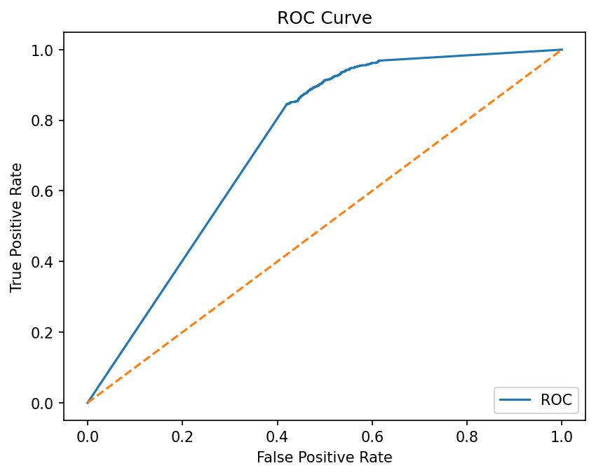
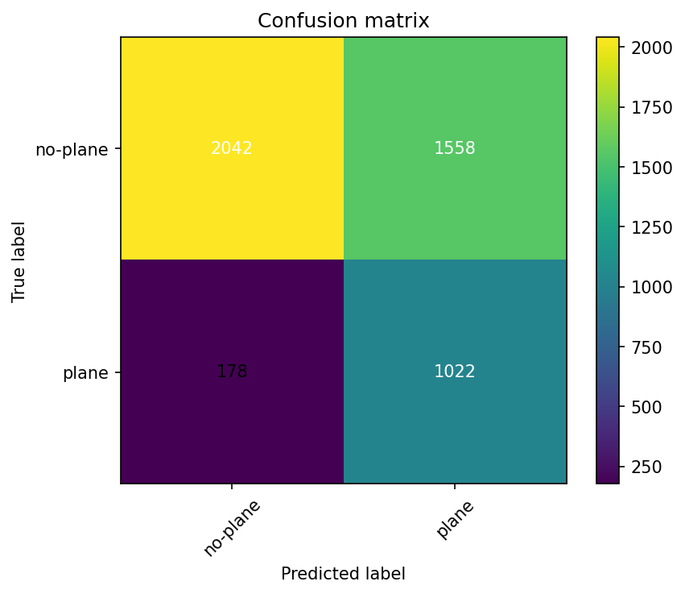
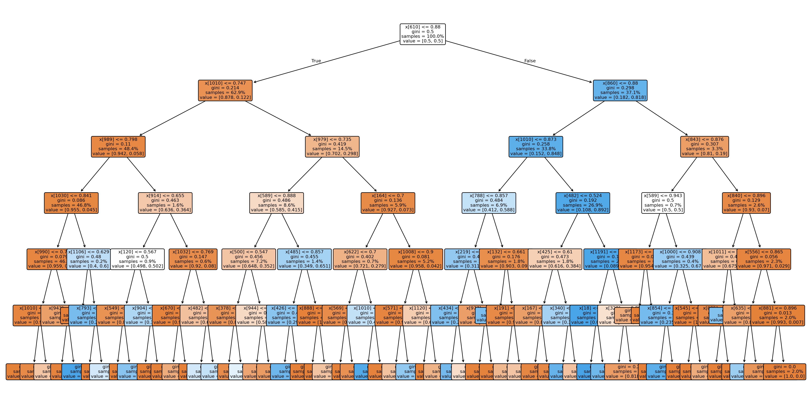
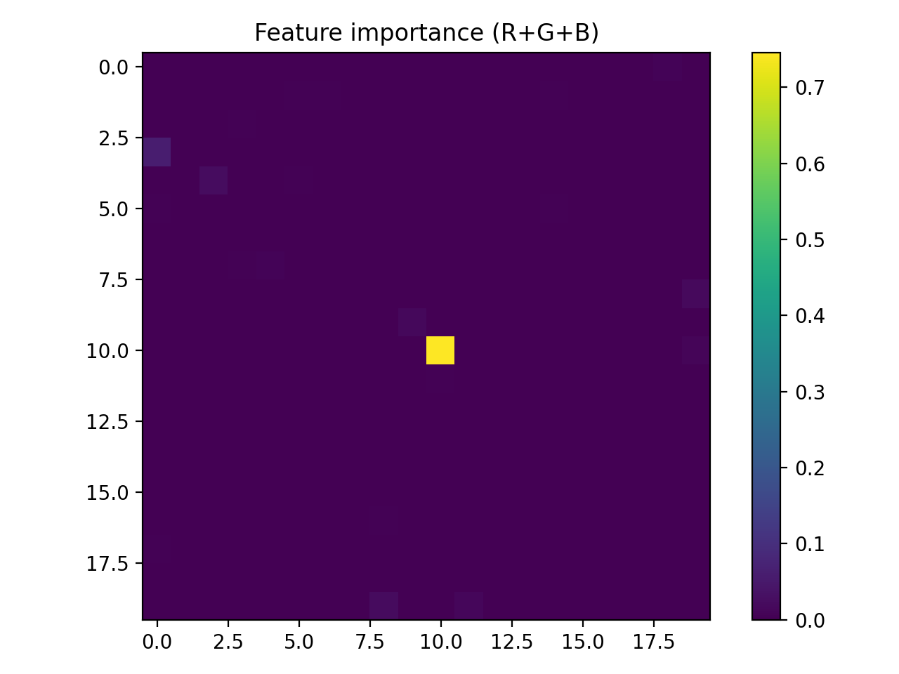

Détection d’Avions sur Imagerie Satellite (PlanesNet)
Classification supervisée : réseaux de neurones et algorithmes classiques
Présentation du Projet
Ce projet applique plusieurs méthodes d’apprentissage supervisé pour détecter la présence d’avions dans des images satellites issues du dataset Planes in Satellite Imagery (PlanesNet). Les images (20×20 RGB) sont labellisées plane ou no-plane et sont fournies en JSON (vecteurs de 1200 pixels). L’objectif est de construire un socle de modèles de classification (CNN, MLP, ResNet18, KNN, Naive Bayes, arbre de décision) avec métriques complètes (ROC-AUC, matrices de confusion, courbes précision) et de les comparer pour faciliter le choix et le déploiement selon le contexte.
Implémentation
- Réseaux de neurones : CNN 20×20 (baseline), MLP sur vecteurs aplatis, ResNet18 avec upscale 64×64 (PyTorch / torchvision).
- Algorithmes classiques : KNN avec option PCA et grid search, Naive Bayes (GaussianNB) avec PCA, arbre de décision (+ export Graphviz).
- Orchestration : un runner unifié (planesnet_runner.py) pour lancer chaque expérience en ligne de commande.
Pile technique : Python, PyTorch, torchvision, scikit-learn, matplotlib, joblib.
Résultats & Visualisations
Les visualisations suivantes illustrent les performances et l’interprétabilité des modèles supervisés :




Analyse & Conclusion
Les expériences sur le dataset PlanesNet montrent l’efficacité des méthodes supervisées pour la détection d’avions en imagerie satellite. Les modèles CNN et ResNet18 se démarquent par leur robustesse face aux variations visuelles, tandis que KNN et Naive Bayes restent pertinents pour des déploiements légers ou des bases de référence. L’arbre de décision apporte une interprétabilité directe et des cartes d’importance des pixels, utiles pour expliquer les décisions.
En conclusion, la combinaison de réseaux profonds et d’algorithmes classiques offre une approche complète et reproductible pour la classification binaire (avion / non-avion), avec des métriques et visualisations adaptées à la prise de décision (sécurité, gestion aéroportuaire, R&D).
Cas d’usage & Prise de décision
- Surveillance d’activité : détection d’avions sur zones sensibles ou aéroports pour la planification.
- Aide opérationnelle : maintenance, affectation de ressources, optimisation des créneaux.
- R&D et comparaison de modèles : benchmark CNN / MLP / ResNet vs KNN / Bayes / arbre, interprétabilité (arbres, heatmaps).
Reproductibilité & Commandes
Un fichier regroupe les commandes pour lancer chaque algorithme et le runner : télécharger planesnet_commands.txt.
Exemple : entraîner le CNN
python planesnet_cnn.py --json Data/planesnet/planesnet.json --model cnn --epochs 25 --batch-size 256
Exemple : lancer le runner unifié
python planesnet_runner.py --algo cnn --mode train --json Data/planesnet/planesnet.json
Dataset
- Taille : ~32 000 images 20×20 RGB, labels binaires.
- Formats : PNG nommées {label}_{sceneid}_{lon}_{lat}.png et JSON (data, labels, scene_ids, locations).
- Pré-traitements : normalisation [0,1], augmentations légères (flips, rotations 90°) pour les CNN.
Code Source
Scripts et pipeline complet disponibles sur GitHub :
Accéder au dépôt GitHub